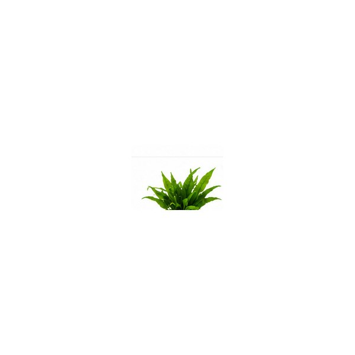
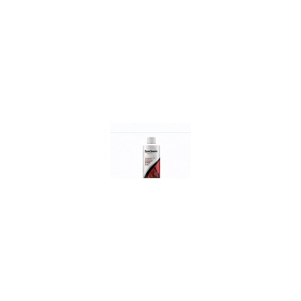

Your first aquarium.
Tank size, filtration, substrate, cycling and the equipment worth buying first.
Start here →Practical, easy-to-follow guides for setting up, planting and maintaining freshwater aquariums.
Tank size, filtration, substrate, cycling and the equipment worth buying first.
Start here →Combine substrate, plants, lighting, rocks and wood into a balanced layout.
Explore →Understand filtration, water changes, conditioning and routine cleaning.
Learn →Choose a tank that fits your space, size filtration appropriately, establish a stable biological cycle, then add lighting and décor. A simpler setup is often easier to maintain than an overcomplicated one.
20-gallon aquarium · canister filter · adjustable heater · full-spectrum light · water conditioner · basic maintenance tools.

Use substrate, lighting and plant selection as a connected system. Easy-care plants such as Java fern can make an attractive starting point without requiring an advanced setup.
Shop live plants →Regular maintenance, appropriate filtration and routine testing help you understand what is happening in the aquarium. Follow product directions and research the requirements of the animals and plants in your specific setup.
Shop water care →